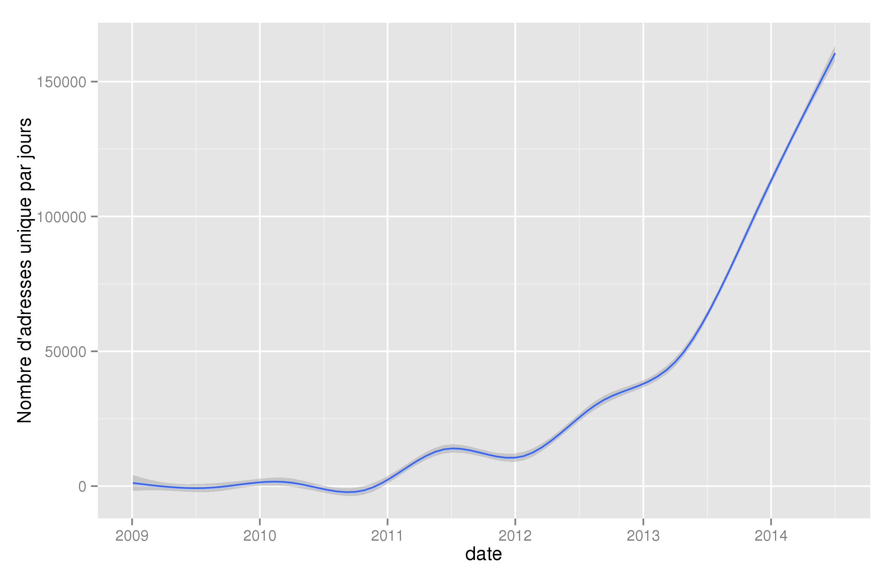

CryptoKnit
un modèle pour les chercheurs d'or!
Created by Les rebelles de l'espace / +MAPS CM 27 juin 4 juillet / Seignosse (Fr)
J-4
La thématique :
Des chercheurs d'or à la conquête de l'Ouest!
...
- listen to the thunder
- Full of darkness
La problématique
Comment se mettent en place les coalitions de chercheurs d'or
- En fonction de l'aversion au risque
- En fonction de l'information à laquelle ils ont accès (experience propre, du voisinage, information parfaite)
Questions principales et hypothèses
- les inégalités économiques sont nécessaires au fonctionnement de l'économie mondiale
- passage de l'état mineur individualiste, coopérateur, avec la raréfaction de la ressource.

Modèle, objectifs et échelles
- De l'extraction à l'exploitation de la richesse. (note : pas des riches ).
- Identifier des comportements qualitatifs typiques (les conditions sous lesquelles la ressource ne se diffuse pas, dans lesquelles elle se développe...)
- Les échelles :
- spatiale : Des états nations
- temporelle : mensuelle
Principales entités :
agents économiques avec des rôles (mineurs, spoliateurs, acheteurs / vendeurs), les Etats, coopératives.
Indicateur(s) de sortie :
richesse des nations, inégalité entre mineurs, homogénéité dans la pratique au niveau mondial.
J-2
Bas les masques
crédit photo : Marshall Astor sur Flickr
Chercheurs d'or, mineurs de Bitcoin : même combat!
- des agents à la recherche d'une ressource
- des réseaux (sociaux, des systèmes de coopérations , internet, (hypergraphe?),...)
crédit photo : Jason Benjamin sur Flickr
Les questionnements (1)
pourquoi (stratégie):
- commencer ou arrêter de miner ?
- entrer ou sortir d'une coopérative ?
crédit photo : State Library of South Australia sur Flickr
Les questionnements (2)
comment se comporte le système :
- en fonction des réseaux?
- après épuisement de la ressource (divergence Or/BTC) ?
- en cas de régulation ?
crédit photo : Janet Lindenmuth sur Flickr
Les échelles "sociales"
Jour J
Crédit photo : The U.S. Army sur Flikr
crypto-quoi?
- systèmes d’échanges virtuels entre individus
- Les crypto-monnaies sont des « monnaies » non régulées et non centralisées
- La communauté qui assure le fonctionnement de la monnaie
- Décryptage de « blocs » rémunéré : en 2014 : 25 bitcoins
- Des coopératives :
- offrir aux mineurs une aide technologique
- permettre une redistribution des gains entre chaque membre de la coopérative
Un petit point sur le BTC
Le nombre de BTC minés par jour "de tous temps"
Le nombre de wallet BTC "de tous temps"
Rappel des objectifs
- Modélisation d’une partie du fonctionnement d’un crypto-système
- Effet de la structuration en coopérative
- Effets d’inégalités territoriales
Problématique
Comment une crypto-monnaie peut-elle se développer?
Hypothèses
- Les mineurs de petite puissance de travail ont intérêt à se grouper en coopérative
- La régulation par un Etat ne change rien
Crédit photo : Đạt Lê sur Flikr
Réductions nécessaires?
- Comparaison Chercheurs d’or/ mineurs de BitCoin
- Gouvernance des Etats face à mise en danger par nouvelle monnaie essai de régulation spatialisée
- Concurrence entre monnaies (avec US $)
- Multi-niveaux: niveau mondial et national
- Question de la stabilisation d’une monnaie
Crédit photo : memekode sur Flikr